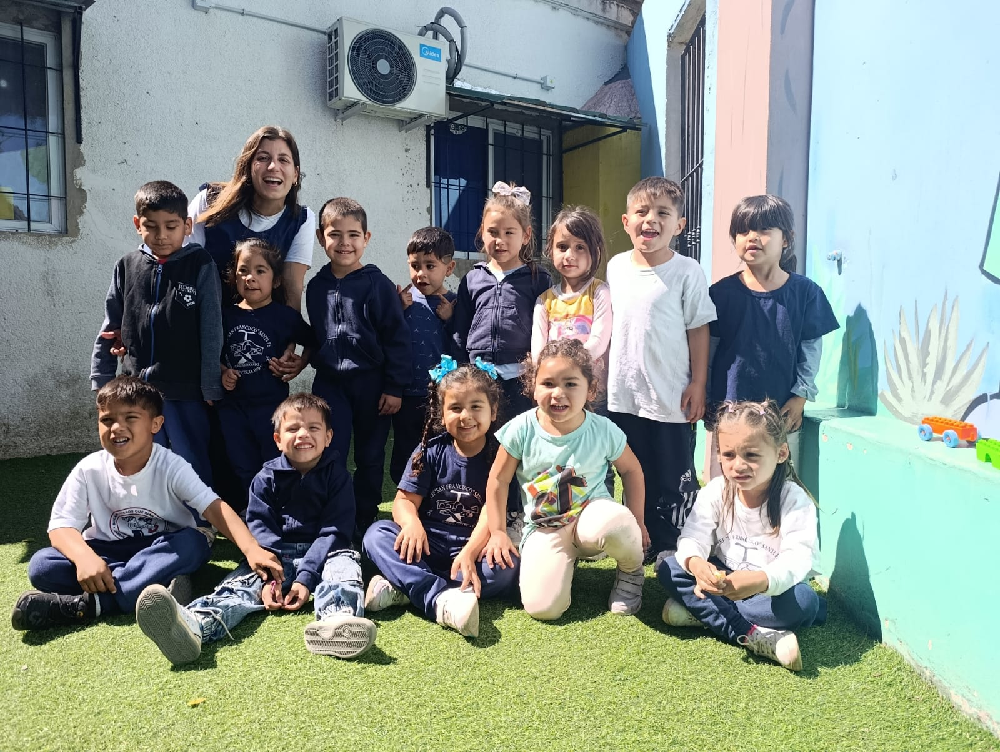
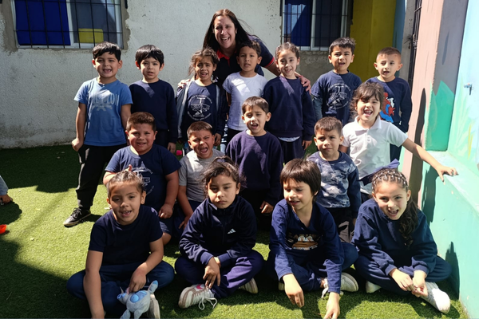
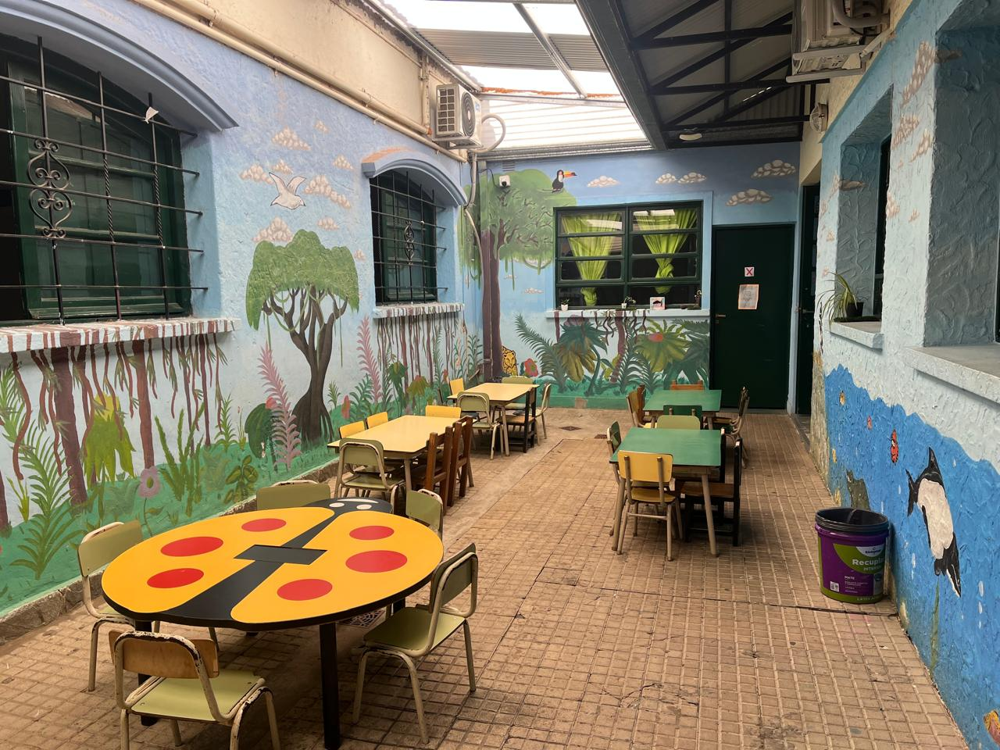
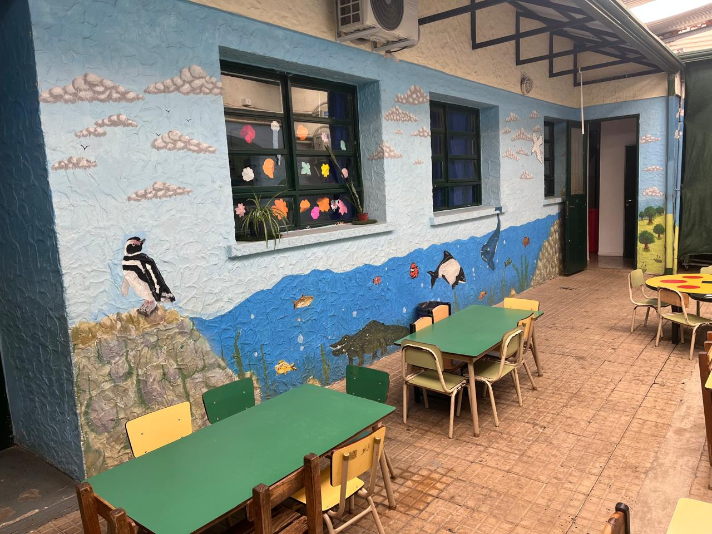

Nivel Inicial.
Nivel Inicial.
"Somos quienes estamos en la
-puerta de entrada-
no solo del largo recorrido por el sistema educativo, sino también de
la vida comunitaria, del mundo". Patricia Sarlé Ines Saenz(2022).
La Educación inicial asume desde el inicio la tarea de alojar desde las diferencias legítimas y construir condiciones de igualdad, al garantizar que ninguna diferencia devenga en desigualdad (Siede, 2010). Aquí comenzarán a formarse como ciudadanas y ciudadanos, como sujetos sociales, plenos, de derechos y responsabilidades. Nuestro nivel inicial es un espacio que contribuye a la posibilidad de que cada quien pueda expresar sus deseos, elecciones, singularidades y diferencias en el marco de la garantía de derechos.
Promoción 2025

Sala de 3 y 4 años
Espacio de juego, exploración y vínculos.

Sala de 5 años
Autonomía, creatividad y preparación para el nivel primario.

Sala de 3 y 4 años
Espacio de juego, exploración y vínculos.

Sala de 5 años
Autonomía, creatividad y preparación para el nivel primario.